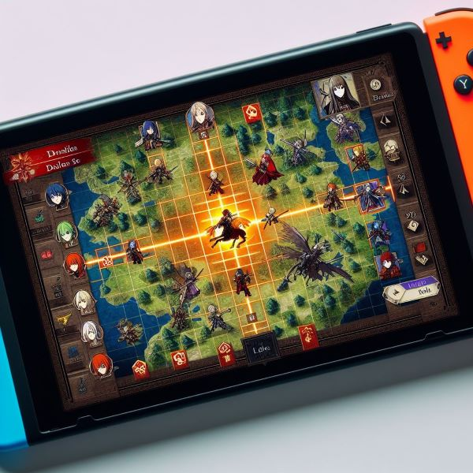

The Fire Emblem franchise is a series of tactical role playing games (RPGs).
The gameplay typically revolves around turn-based battles on grid-based maps, where players control a group of characters known as "units." Units have various classes, weapons, and abilities, and players must strategically maneuver them to defeat enemies while considering terrain, positioning, and unit strengths and weaknesses.
One of the distinctive features of the Fire Emblem series is its emphasis on permanent death, often referred to as "permadeath." When a unit is defeated in battle, they are permanently removed from the game, adding a layer of strategy and consequence to gameplay. However, in some recent entries, players have been given the option to disable permadeath if they prefer.
The series is known for its compelling storytelling, often involving intricate plots, memorable characters, and themes of war, politics, and fantasy. Many games in the series feature interconnected narratives set in the same fictional universe, with recurring elements such as legendary weapons and dragons.
What is a tactical RPG?

AI generated image using Bing
A tactical RPG, also known as a tactical role-playing game, is a subgenre of role-playing games (RPGs) that emphasizes strategic gameplay elements, particularly in combat scenarios. In a tactical RPG, players typically control a group of characters or units and engage in turn-based battles on grid-based maps.
Here are some key characteristics of tactical RPGs:
Turn-Based Combat: Tactical RPGs feature turn-based combat, where players take turns with the computer-controlled opponents to make decisions and execute actions. Each character or unit typically has a set of actions they can perform during their turn, such as moving, attacking, using items, or casting spells.
Grid-Based Maps: Combat in tactical RPGs takes place on grid-based maps, where each grid square represents a specific location on the battlefield. Players must strategically position their units on the map to gain advantages, such as higher ground, cover, or proximity to enemies.
Character Customization: Players often have the ability to customize their characters or units by selecting classes, abilities, equipment, and skills. This allows players to tailor their team to their preferred playstyle and strategize based on the strengths and weaknesses of each character.
Resource Management: Tactical RPGs often involve resource management mechanics, such as managing limited supplies, currency, or equipment. Players must carefully allocate resources to maximize their effectiveness in battle and ensure the survival of their units.
Permanent Consequences: Many tactical RPGs incorporate permanent consequences for player actions, such as permanent death for characters who are defeated in battle (commonly known as "permadeath"). This adds a layer of challenge and consequence to gameplay, as players must weigh the risks and rewards of their decisions.